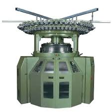

TEXTILE WORLD |
Today textile world is recognized as the world's leading supplier of single and double jersey knitting machines. It is
led today by Bruce's son, Craig Pernick. textile world's reputation has been built on a strong partnership with
Fukuhara Industrial & Trading Co. Ltd. in Japan.
Together with Fukuhara, textile world's business philosophy has always been to stay ahead of our competitors
through continuing technological development and innovation. We believe that the quality of
our machines are of paramount importance, but not more so than our customer service and support. This philosophy has enabled us
to establish very close working relationships with our customers. We feel that it is the close bond we develop
with our customers which enables us to better understand market demands and positions textile world
and
Fukuhara to lead the commercial development of new machinery and fabrics in the global marketplace.
|  | M-9MEQGDouble Knit SeriesDouble knit quarter gauge technology.Technical DetailsDiameters 30, 34 Gauges 6/24, 7/28, 8/32 Frame M Feeds 72, 78End UsesSports & Leisure, Apparel, Home Textiles, Technical Textiles, AutomotiveFabric PotentialsCoarse/Fine gauge, Reversible, Pique, 2 Colour Constructions |
Contact |